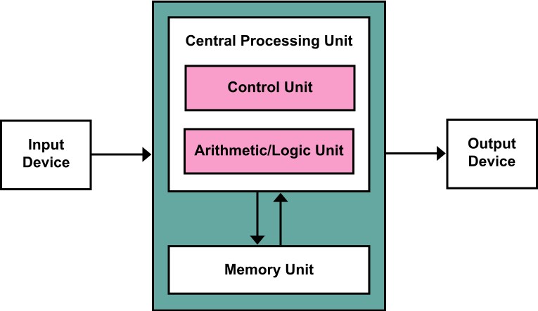

This architecture stores the program data and the instructions in the same memory unit.

The basic elements are:
The term "von Neumann architecture" has evolved to refer to any stored-program computer in which an instruction fetch and a data operation cannot occur at the same time (since they share a common bus). This is referred to as the von Neumann bottleneck, which often limits the performance of the corresponding system.[3]
Because the single bus can only access one of the two classes of memory at a time, throughput is lower than the rate at which the CPU can work. This seriously limits the effective processing speed when the CPU is required to perform minimal processing on large amounts of data. The CPU is continually forced to wait for needed data to move to or from memory. Since CPU speed and memory size have increased much faster than the throughput between them, the bottleneck has become more of a problem, a problem whose severity increases with every new generation of CPU.
This architecture is simpler than the Harvard Architecture which includes a dedicated set of addresses to host the program instructions, and another set of addresses plus data buses for reading and writing to memory.